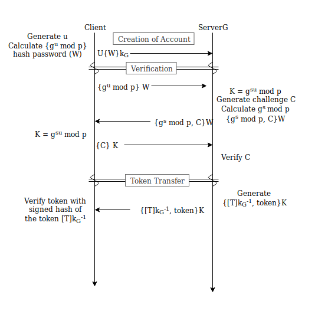
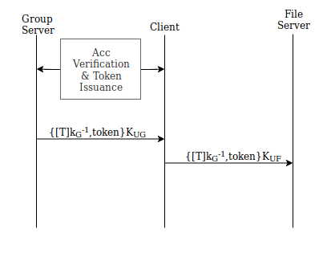
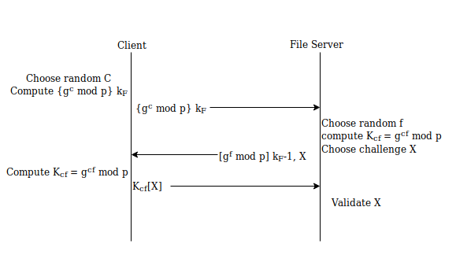

Phase 3 – Protection Mechanisms
Trevor Lingle trl46, Di Wu diw26, Aaron Wu faw21
1. Purpose
To describe the mechanisms to be used in protecting a file server service. The mechanisms being used are to combat threats such as: Unauthorized Token Issuance, Token Modification/Forgery, Unauthorized File Servers, and Information Leakage via Passive Monitoring.
2. Mechanism Summary
Unauthorized Token Issuance is prevented by first authenticating
the user with a user defined password derived from account creation. Passwords
are stored as hashes following encrypted key exchange.
Token Modification/Forgery is prevented by the Group Server signing the key with their private key. The Group Server’s public key is publicly distributed to the rest of the system to verify that the key has not been Forged.
Unauthorized File Servers are prevented by the Client sending a challenge encrypted with the stored File Server’s public key. The File Server then proves itself by sending back the decrypted challenge.
Information Leakage is prevented by all connections first undergoing a Diffie-Hellman exchange to create symmetric keys. Those symmetric keys are then used to encrypt all further communications.
3. Language Clarification
File Server – The server storing and managing files and verifies user access.
Group Server – The server managing user and group lists and verifies list access.
Client – The client service used to make requests to the group/file server.
User – The identifier for a client operator within the group server which a token defines.
Client Operator – The one who operates the Client (human input and/or automated script).
User Token – Shared object between the group/client/file servers to identify the user accessing each system.
4. Mechanism Implementation
4.1 Threat 1 – Unauthorized Token Issuance
•
Threat Summary: Client requests are not to be trusted by the
group server without authentication of identity. Client requests may be
requesting the user token which the client operator is not the owner of.
• Mechanism:
◦
Users will be authenticated by passwords following encrypted key
exchange (EKE) with the NIST recommendation of 8 character minimum enforced by
the Client. Setup and authentication goes as follows:
▪ User Creation (Setup)
• C (Client) generates SHA-256 hash of their password W
• Client sends a username U and {W}kG using Group server’s public key kG
• Group Server sends the Client the values g and p
• Group Server Stores U and W
• Client stores g and p
▪ Authentication
• Client calculates gu mod p with a randomly generated nonce u
• Client calculates the SHA-256 hash of the password W
• Client encrypts gu mod p with the hash as a key for AES.
• Client sends {gu mod p}W to the group server
• Group Server generates gs mod p with a randomly generated nonce s
• Group Server calculates K = gsu mod p
• Group Server chooses a new random challenge C
• Group Server encrypts gs mod p and C with W
• Group Server sends {gs mod p, C}W to the Client
• Client calculates K = gsu mod p
• Client sends {C}K to the Group Server
• Group Server verifies C
• Group Server generates SHA-256 hash of the User Token T, and signs T
• Group Server sends {[T]kG-1, token}K to the user on success

◦ Passwords will be saved on the group server in a lookup table consisting of <Username (U) , password hash W> pairs.
◦ The prime p and generator g are at least 1024 bits constant, and they are shared among all individuals/servers.
◦
Rather than signing the token, Group Server can sign the hashcode
of token for efficiency. Thus, a toString() method in UserToken class is
required to convert a token to a hashable string. The idea is padding each
field with 0s to make it reach a specific length.
• Justification:
◦ It is assumed that only authorized Client Operators for User U know the password to get W.
◦ C is new for every authentication, therefore a replay attack fails when the client sends an old { gu mod p }W due to not being able to generate the new K.
◦ Setup and Authentication is encrypted (see 4.4) preventing W from being exposed on account creation and is never sent again. This means that even if the encryption wrapping communication is broken, then the attacker will not gain knowledge about W (although will be able to see all other traffic including token transfer).
◦ Since passive attackers can learn U, W, p, g and send the {gu mod p}W to the server as well. It is essential to encrypt W using file server’s public key at the setup phase
4.2 Threat 2 – Token Modification/Forgery
•
Threat Summary: Client operators may attempt to modify the user
tokens being sent and stored with the client in a way to impersonate another
user or gain non-distributed group access to their own user.
•
Mechanism: Private key signing using RSA key pairs will be used
to ensure that the token received by a Client is the unmodified token expected
by the Client Operator, and the File Server will be able to verify the User
Token originated from the Group Server. The User Token exchange between the
Client and Group Server and between Client and File Server would occur as
follows:
◦ The Group Server authenticates the client operator.
◦ On successful authentication, the Group Server sends {[T]kG-1, token}KUG to the Client.
▪ T is the hash of UserToken, kG-1 is the private key of Group Server, KUG is the symmetric key between Client and Group Server
◦ The Client sends {[T]kG-1, token}KUF to the File Server
▪ KUG is the symmetric key between Client and File Server

• Justification:
◦ Rather than signing the token, Group Server can sign the hashcode of token for efficiency. Thus, a toString() method in UserToken class is required to convert a token to a hashable string. The idea is padding each field with 0s to make it reach a specific length.
◦ Private key signing allows File Servers to verify that User Token was created by the Group Server and did not get modified by Clients. File Servers are able to compare the hash of User Token with decrypted [T]kG-1. If two hashes are different, it means User Token has been modified, and File Server can reject the connection.
◦
Any attempt to make changes to the [T]kG-1 by
the Client would require knowledge of the Group Server’s private key which is
assumed to be secure.
4.3 Threat 3 – Unauthorized File Servers
•
Threat Summary: Client Operators should be confident that the
file server they attempt to connect to is legitimate. An client could initiate
a connect to a known server but instead be redirected to a malicious server
leading to leakage of the client operator’s files and or user token allowing
access to files on the non-malicious file server.
•
Mechanism: Access to a File Server will require the File Server’s
administrator to transfer the public key to the Client, and it is assumed the
Client has a stored mapping of File Servers to public keys. This mapping is
assumed to be correct.
To authorize the file server, the Client and File Server go through a
Diffie-Hellman key exchange. The DH key exchange transportations are
encrypted/signed by File Server’s public key/private key:
◦ Client chooses a new random number c.
◦ Client encrypts {gc mod p} kF with File Server’s public key.
◦ File Server chooses a new random number f, and compute Kcf = gcf mod p
◦ File Server signs [gf mod p] kF-1 with File Server’s private key.
◦ File Server sends a challenge nonce to the Client
◦ Client Sends back the Challenge and is compared validating the new keys

• Justification:
◦ Only the File Server known by the Client will be able to decrypt the {gu mod p} and sign the [gf mod p] correctly.
◦ DH key exchange prevents information leakage between the client and the File Servers
◦
The prime p and generator g are at least 1024 bits constant, and
they are shared among all individuals/servers.
4.4 Threat 4 – Information Leakage via Passive
Monitoring
•
Threat Summary: The communications between the File/Client/Group
servers may not be private such that any data sent across the network could be
viewed including user tokens and private file data. A malicious user could copy
the user token to take control of another client operator’s user or view
personal and private data over the wire.
•
Mechanism: Signed Diffie-Hellman will be used to prevent
information leakage between the client and the File/Group servers. Each Server
(File server/Group server) will have their own public/private RSA keypair. For
Client and File Servers, key exchange occurs at the phase of verifying File
Server (See T3). For Client and Group Server, key exchange occurs at the phase
of verifying Client (See T1). Exchanges will go as follows:
◦ The Client generates a random nonce (nc) which is used to calculate gnc mod p
◦ The Server generates a random nonce (ns) which is used to calculate gns mod p
◦ The Client sends gnc mod p to the Server
◦ The Server sends gns mod p to the Client
◦ The Client computes the symmetric key Kcs = ([gnb mod p]nc mod p)
◦ The Server computes the symmetric key Kcs = ([gnc mod p]ns mod p)
◦ Client and Server encrypt all communications sent using the symmetric key Kcs
New nonces nc ns
will be generated on each connect between a server and client preventing reuse
of the symmetric key Kcs.
• Justification:
◦ Diffie-Hellman exchange allows for a symmetric key to be generated without ever sending the key Kcs over the network, and the public information shared is not enough to easily determine the symmetric key.
◦ Using a symmetric key allows for large amounts of data to be quickly encrypted/decrypted.
◦ With lack of key reuse, information gained from previous sessions will not be able to be used
◦ If a signed gn mod p was modified in traffic, or a replay attack was attempted, then the value of Kcs will not match for both the Client and Server.
5. Notes
• The mechanisms described combat a malicious Client and passive attackers, but assumes no part compromised and communications are neither disrupted nor altered. Given a compromised Client, many of the security features described above will not prevent an attacker from gaining access to the compromised Client Operator’s User and in relation, their files; but, other Users should not be considered compromised.
• Compromised as used above is defined in that the functions of a User are accessible from an unauthorized party.
• The hash functions we mentioned above are all SHA-256
• The block cipher algorithm we utilized are AES with CBC mode.
• Public keys must be dispersed off band from trusted sources (a known system administrator through signed email or physical transfer off a media device).
• the g & p values are derived from the standardized java crypto library using the bouncy casle provider.
Logging: Group server provides secuity logs to enable auditing of the group server. A timestamped record to track the changes to the group server's records of group and file lists. Only those with access to the server will have access to the logs to protect privacy of those using the group server from the client application.